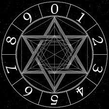

Bienvenido, hoy quiero enseñarte lo que es la numerología y los tipos que hay, enseñarte sobre lo que es y toda su historia del pasado. Aquí podras sacar tus números angelicales,tantricos, etc y podras identificarte con los mensajes y despripciones que esperan por ti.
Fundamentada en conocimientos empíricos y científicos, antiguos y contemporáneos, creencias y tradiciones, la numerología es una práctica adivinatoria que establece una relación mística entre los números y los seres vivos, así como las fuerzas físicas y espirituales. En la antigüedad fue tratada incluso como una ciencia por los primeros matemáticos, pero en la actualidad se ha descartado su uso en el terreno científico.
Actualmente es un estudio de la relación que existe entre los números, letras y patrones, de manera que estos definen como es tu actitud, personalidad, futuro y número de la suerte a traves de diferentes formas y métodos. También es una práctica adivinatoria a través de los números, letras y patrones que ayudan a tener un mayor conocimiento sobre nosotros mismos, los demás y como nos relacionamos con el mundo. Estos definen las vibraciones de los seres vivos y objetos que les rodean de manera positiva. Por lo tanto, los números ayudan a entender la forma de actuar las personas, y también, a predecir su futuro. Ahora que tienes una leve descripción de lo que es la numerología, ¡saca tus números! Estos pueden apoyarte en tu futuro y darte el mensaje que tanto necesitabas aunque probablemente no supieras.
Los orígenes de la numerología datan del año 569 al 470 AC. El filósofo y matemático griego Pitágoras que contribuyó significativamente en el avance de la matemática helénica, la geometría y la aritmética. También se dedicó al estudio de la metafísica de los números porque el creía que cada uno de ellos puede reducirse a un simple dígito. Según él, al comprender este simple dígito podíamos entender cual era nuestro destino y mensaje que se nos tiene planeado en nuestro destino. Según los numerólogos, los números son mucho más que una forma de medir o cuantificar lo que existe a nuestro alrededor. Pitágoras creía que el universo debe ser visto como un todo armonioso, donde todo emite un sonido o vibración. Y creia que los números del 0 al 9 están asociados a características específicas de números, que juntas abarcan toda la experiencia de la vida.

La Kabbalah, un libro de textos del misticismo. Utiliza las letras del alfabeto hebreo para encontrar el significado numerológico de un nombre. Esta técnica fue utilizada en principio por los filósofos kabalísticos como una forma de esconder el texto de la Kabbalah de los no creyentes. Con el tiempo, empezó a utilizarse como una manera de encontrar nuestra misión y nuestro rol en la vida, y bienestar a partir de nuestro nombre. La numerología fue introducida al mundo moderno por la señora L. Dow Balliett, una influyente espiritualista de principios del siglo XX, que escribió varios libros sobre el tema. Su estudiante, la Dra. Juno Joran, es responsable de haber hecho que las personas conocieran el método de un único número que empleamos hoy en día.
Después de este pequeño contexto sobre su historia y creencias, tienes que tener en claro que no hay solo un tipo de numerología, si no varios como los siguientes:
Existen infinidades de tipos de numerologías, pero, solo les hablaré de algunas que son:
Si alguna de estas numerologías te llama la atencion y quieres saber a profundidad de esta y como poder sacar tu número. Seleccionala la que te gusto abajo y sigue interactuando